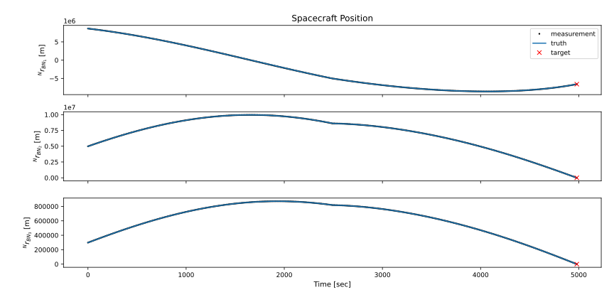
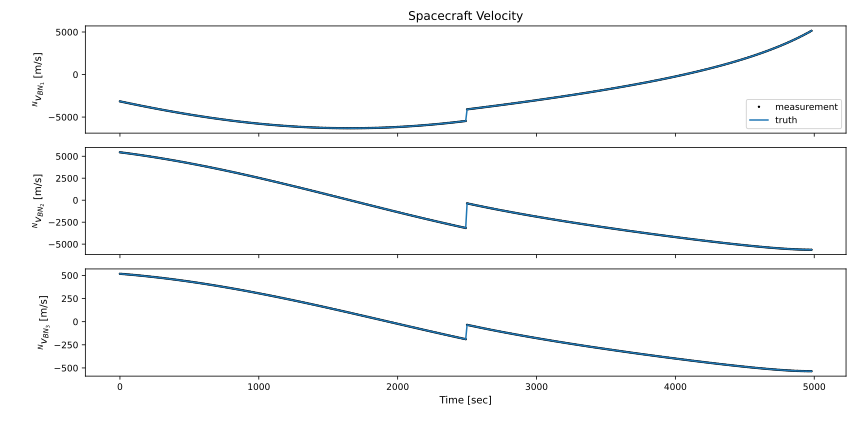
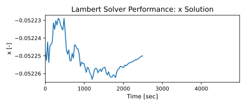
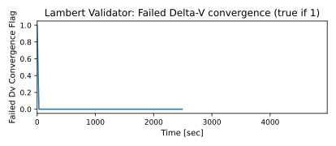

scenarioLambertSolver
Overview
This scenario demonstrates how to use the Lambert solver module package, consisting of
lambertPlanner(), lambertSolver() and lambertValidator(), the computation of a Delta-V maneuver that takes
the spacecraft to a desired locataion in a given time.
In this scenario, the goal is to reach a target position at final time tf by performing a maneuver at time tm. This is done by solving Lambert’s problem. The Lambert problem is set up using Module: lambertPlanner, which provides the information in the form of LambertProblemMsgPayload to Module: lambertSolver. Lambert’s problem is solved within Module: lambertSolver, which writes the LambertSolutionMsgPayload and LambertPerformanceMsgPayload output messages. Finally, Module: lambertValidator processes the content of those messages, computes the required Delta-V, and only writes a non-zero Delta-V message within DvBurnCmdMsgPayload if no constraints are violated (minimum orbit radius and final distance from targeted location) and the Delta-V solution has converged.
The simulation layout is shown in the following illustration. The simulation and flight software (FSW) are divided into two different processes. After the maneuver, all tasks of the FSW process are disabled.

The true and measured spacecraft position and velocity are shown in the plots below.
 Likewise, the expected spacecraft position and velocity at the time of the maneuver are shown in the plots below. Due to the noise of the measured spacecraft state, the expected state at maneuver time changes slightly with time.
The next Figure shows the Delta-V that will be required at maneuver time to take the spacecraft to the target location. Again, due to the noise of the measured spacecraft state, the Delta-V changes slightly with time.
The following three figures show the performance message content of the Lambert solver module, including the solution of the iteration variable x, the number of iterations it took to find x, and the change in x between the last and second to last root-finder iteration.

Finally, the last figure shows the failedDvSolutionConvergence flag of the LambertValidatorMsgPayload, which is 1 if the lambert validator returned a zeroed Delta-V if the Delta-V solution is too different from the previous time step, and 0 otherwise. At the very first time step, the flag is equal to 1, because it is the first time step so the solution has not converged it. At all subsequent time steps, the flag is equal to 0.
The script is found in the folder basilisk/examples and executed by using:
python3 scenarioLambertSolver.py
- scenarioLambertSolver.plot_failedDvConvergence(time, failedDvSolutionConvergence)[source]
Plot the failedDvSolutionConvergence flag.
- scenarioLambertSolver.plot_numIter(time, numIter)[source]
Plot the number of iterations from the Lambert solver.
- scenarioLambertSolver.plot_position(time, r_BN_N_truth, r_BN_N_meas, r_TN_N)[source]
Plot the position result.